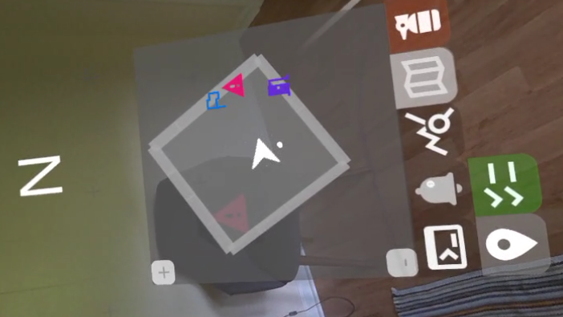
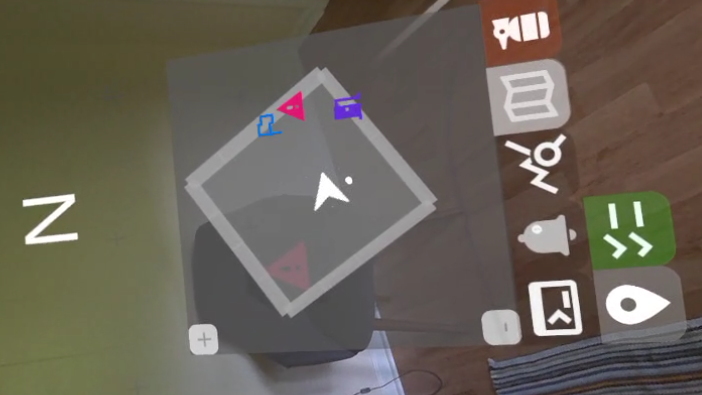

Note that this list isn't necessarily exhaustive, as some of my professional projects are not shareable due to NDAs.
Nonetheless, these examples do a pretty good job of representing the different types of projects I've worked on.
 

FirstModulAR (WIP)
Actively in development at NextGen Interactions, FirstModulAR is a framework for rapidly creating AR interfaces for first responders.
The project is very research-forward and emphasizes the development of "modules" -- lightweight, interconfigurable UI components that can be mixed and matched in order to create targeted software interventions, often as an aid for completing a certain discipline-specific task (e.g. navigating a burning building as a firefighter, or keeping track of the vitals data of a patient in critical condition as an EMS personnel). These interfaces can grant first responders an instant understanding of mission-critical (sometimes lifesaving) information, spatialized intuitively in their local environment.
Example modules include:
- A "point of interest" system which allows users to place markers in the world which designate important locations, e.g. a rally point, a civilian who needs evacuation, a hazard, etc. Points of interest are visualized spatially in the world
- A map system which shows points of interest from an "overhead" view
- A navigation/pathfinding system that routes the user to a selected point of interest, visualizing the path in both the world and on the map
- Virtual vitals monitors which depict a medical patient's heart rate, oxygen saturation, etc.
- Database lookup to cross reference a license plate with a driver's license
...and many more.
Another big accomplishment with this project was the robust cross-platform support we were able to provide. AR is lagging a bit behind VR in terms of supporting common standards, so we had to do a fair bit of the heavy lifting ourselves to translate input data across several different AR platforms (Meta Quest, Microsoft HoloLens, Magic Leap 2) into a common input paradigm that we could then use to interface with the application. Not all features are supported across all platforms, but we were able to get pretty close.
FirstModulAR is a collaboration between NextGen Interactions and researchers from multiple universities.
2024

HazVR
HazVR is NextGen Interactions' flagship software application and, in many respects, one of my most sophisticated professional projects to date. The software was designed as a training tool to help firefighters and hazmat technicians learn how to use an air monitor, a handheld device which, when used properly, allows the user to detect dangerous vapors and gases in the environment.
The application has a number of pretty complex systems running under the hood, including:
- A dynamic gas simulation system that invisibly propagates gases and mixtures of gases through the simulation space in real-time
- Simulated air monitors which realistically emulate the shortcomings and behaviors that make air monitors so difficult to use effectively (e.g. response times, cross-sensitivities)
- 3D data visualizations that allow a trainer to, in a single glance, assess how trainees used their instruments over the course of an entire training session
- Networked multiplayer and a replay system which provides complete control over playback
As one member of the three-man development team that developed this application, I massively contributed to each of the systems described above on all fronts -- UX and UI design, overarching software architecture and system design, and low-level technical implementation. Despite the complexity of the software's underlying systems, I took great care in making the software as intuitive as possible to use, with excellent results -- in user testing of the software, HazVR consistently received an average Net Promoter Score of 9+.
Official HazVR website
NIST article on HazVR
Domestic Preparedness article featuring HazVR
Featured by PSCR 5x5 2024
2023
Paper Town VR
Interactive art installation, created as a group project during my undergrad studies. A user utilizes a VR headset to see a miniature papercraft village through a live camera. As the user turns in space, a mechanism rotates the camera in real time so as to accommodate the new viewing angle.
I was responsible for programming the physical mechanism which rotates the camera, as well as the VR-enabled Unity scene, and essentially getting the two to communicate nicely with each other.
This installation ended up getting some traction in the tech/art community, and was featured at the ACM Siggraph conference in Los Angeles, California.
More Info
Featured by Siggraph
2017
Australian Safari
Augmented-reality scavenger hunt, created as a collaboration between the NCSU College of Sciences and the College of Design. Users leave the application running on their phone as they follow clues to various real-world locations on the NCSU campus. Bluetooth beacons installed at each of these locations trigger an event which displays an educational video about a unique Australian animal.
2017